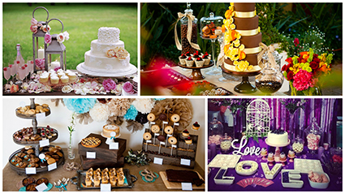
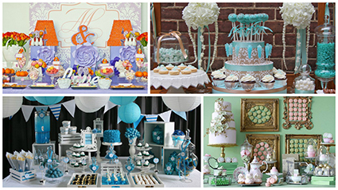

Каждая пара хочет, чтобы их свадьба была стильной, модной и запоминающейся. Кэнди-бар (или сладкий стол) – отличный способ подчеркнуть индивидуальность и стиль мероприятия.
Традиция оформления сладких столов на праздниках пришла к нам с Запада, где практически ни одно мероприятие не обходится без кэнди-бара. Кэнди-бар (candy buffet) – это сервированный самыми разными видами сладостей, красиво и стильно оформленный фуршетный стол. Капкейки, кейк-попсы, яркие макароны, воздушный зефир, фигурки из мармелада, нежнейшие профитроли … Список угощений может быть самым разнообразным. Знакомые всем нам корзиночки, безе или печенье с глазурью также являются частыми вариантами заполнения кэнди-бара. Неудивительно, что именно кэнди-бар стал главным свадебным трендом последнего времени.
Некоторые пары считают кэнди-бар альтернативой (заменой) свадебного торта, что изначально не верно. Сладкий стол на свадьбе – это не только приятный сюрприз для гостей, но и прекрасная возможность приобщиться к прекрасному и разнообразному миру десертов в любой момент торжества, не дожидаясь появления свадебного торта.
Изысканная подача сладостей с использованием элементов декора превращают традиционное накрытие сладкого стола в изюминку вашего мероприятия. Цвет и оформление «кенди бара» напрямую зависят от стиля праздника. Главное – быть верным общей идее оформления, не бояться использовать нестандартные решения в декоре, подчёркивающие стиль и индивидуальность вашей свадьбы. Делаете свадьбу в модном стиле «шебби-шик» - заменим стол на старинный комод. Выходите замуж за писателя – базой для сладкого стола послужит книжный шкаф, а если жених музыкант – декорируем рояль. В качестве декора заднего фона можно использовать фотографии молодоженов, рамки, картины, объемные буквы, растяжка с именами жениха и невесты, воздушные шары, различные световые элементы. Основная задача заднего фона – быть. Без него кэнди-бар может потеряться в ярком фейерверке красок свадебного торжества.
Очень красиво и нежно выглядит кэнди-бар, оформленный живыми цветами. Небольшие мини-букеты или настоящие цветочные композиции, использованные в оформлении сладкого стола, сделают его более ярким, стильным и выразительным. Главное – не уйти в сторону от выбранной тематики свадьбы. Для декора кэнди-бара следует выбирать те же цветы, что присутствуют в букете невесты и в композициях в банкетном зале, использовать те же ленточки, скатерти или вазы, что и в основных декорациях, создавая тем самым единое пространство праздника.
Чтобы гости знали, что за лакомство представлено на сладком столе, для каждого из десертов используют небольшие карточки с названием (расшифровкой). Эти карточки станут ещё одним элементом дизайна, если использовать тот же шрифт, что на свадебных приглашениях или карточках рассадки гостей.
Оформить кэнди-бар можно самостоятельно, но будет рациональнее поручить это дело профессионалам. Первый вариант хоть экономичнее, но имеет и свои минусы: искать кулинарию, выбирать сладости для кэнди-бара из огромного количества возможных десертов, продумывать дизайн и декорировать сладкий стол придётся самостоятельно. Без соответствующих навыков и опыта это будет довольно непросто. Обратившись за помощью к специалистам, вы, конечно, немного увеличите свадебный бюджет (стоимость сладких столов начинается от 10 000 - 12 000 рублей), но и результат будет достоин восхищения! Ваш сладкий стол будет продолжением основной концепции праздника, островком изысканной радости.
Нашими партнёрами являются лучшие кондитерские Санкт-Петербурга, которые с удовольствием проведут для вас бесплатную дегустацию и помогут с выбором десертов для кэнди-бара, и всем парам, заказывающим у нас декор свадьбы, предложат интересную скидку. Красиво оформленный кэнди-бар - результат работы профессионалов. Сладкой вам свадьбы!
